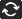

El Marketplace es el mercado en línea de YoYo Games para comprar y vender paquetes de activos. Un paquete de activos puede ser casi cualquier cosa relacionada con GameMaker Studio 2, es decir: sprites, scripts, shaders o incluso motores o frameworks de juegos completos. Para poder crear, comprar y vender paquetes, primero debe estar registrado en Marketplace como editor y haber GameMaker Studio 2 sesión a través de GameMaker Studio 2 (esto será automático cuando ingrese al programa) o desde la página web principal del Mercado. Puede encontrar todos los detalles de cómo convertirse en editor desde el artículo de la base de conocimiento de YoYo Games Marketplace - Configuración de una cuenta de editor.
En esta ventana, puede acceder a su cuenta de usuario (y a sus cuentas vinculadas de editor) desde la esquina superior derecha de la página, y también puede buscar y comprar o descargar paquetes de activos para usar. Puede encontrar información completa sobre cómo comprar y descargar un paquete de activos en el artículo del Centro de ayuda de YoYo Games Marketplace - Comprar un paquete de activos.
Puede acceder fácilmente al Mercado desde el menú desplegable Marketplace en la parte superior del IDE de GameMaker Studio 2, y le ofrece la opción de abrir su Biblioteca de paquetes de activos, así como crear su propio (activos o tutoriales) y actualizar cualquier existente paquetes. Estas ideas se explican con más detalle a continuación:
La ventana Biblioteca muestra los paquetes que ha comprado y le da la opción de descargarlos y / o agregarlos a su proyecto.
A la izquierda están los diferentes filtros de categoría que puedes usar para ver lo que tienes en cada uno, y luego en el medio tienes la lista de activos en tu biblioteca. Cada uno se puede seleccionar para que pueda ver una descripción general de lo que hace (a la derecha) y todos tienen íconos para ver, descargar o instalar el paquete de activos en un proyecto. Tenga en cuenta que tiene dos filtros adicionales en la parte superior de la ventana principal donde puede seleccionar ver solo aquellos activos que se han creado específicamente para GameMaker Studio 2, así como también un filtro para mostrar solo los activos que ya ha descargado en su máquina. También puede actualizar la lista de activos mostrados en cualquier momento haciendo clic en el botón Actualizar: 
Para agregar un paquete de activos a su proyecto actual, primero debe descargarlo haciendo clic en el botón Descargar y cuando la descarga se haya completado, puede hacer clic en el botón Importar para agregarlo a su proyecto. Agregar un paquete de esta manera creará una extensión dentro de su proyecto actual, y le pedirá que seleccione entre los diferentes recursos en el paquete de activos para elegir cuáles desea agregar (o puede importarlos todos). También puede seleccionar la opción Importar todos los recursos a un proyecto nuevo, y en lugar de agregar los activos a su proyecto actual, GameMaker Studio 2 le solicitará que proporcione un nuevo nombre de proyecto y guarde el activo dentro de ese proyecto. Tenga en cuenta que si va directamente a la Biblioteca desde la página de inicio, encontrará que la mayoría de los activos no se pueden agregar de forma individual, y en su lugar se verá obligado a utilizar el botón Agregar todo. Esto se debe a que no tiene un proyecto para agregar los activos, por lo que GameMaker Studio 2 debe crear un nuevo proyecto para que pueda agregar todos los activos del paquete (cuando haga clic en el botón Importar, se le pedirá que guarde el nuevo proyecto con el nombre de tu elección).
Con los activos agregados a su árbol de recursos, ahora puede continuar y utilizarlos en su juego como lo haría con los activos que ha creado usted mismo. Tenga en cuenta que los activos descargados de Marketplace son para uso individual y no pueden compartirse con terceros, aunque puede realizar copias de seguridad y copiarlos en otros lugares por seguridad, a menos que el activo tenga un EULA personalizado que indique lo contrario.
NOTA: Las personas que crean paquetes de activos para el Marketplace trabajan muy duro para crear un gran recurso para que lo use, así que considere calificar los activos que compra cuando los ha probado o si los usa. Esto alienta al desarrollador y también es una guía útil para otros usuarios en cuanto a la calidad de los activos disponibles. Puede calificar fácilmente sus activos descargados desde la ventana Biblioteca.
Cuando selecciona la opción Crear paquete desde el menú IDE, irá al siguiente espacio de trabajo:
Aquí primero debe seleccionar la identidad del publicador en la que desea publicar el paquete de activos (que debe haber configurado desde el Panel del editor ), luego proporcione un Nombre para mostrar y un Número de versión. A continuación, se creará un ID de paquete basado en el nombre para mostrar y la cuenta del editor utilizada, pero puede editarlo si desea, siempre que mantenga el formato de URL inverso. Luego debe elegir el tipo de paquete de activos para hacer:
- Activo: esta es una colección de activos (sprites, scripts, objetos, etc.) que desea vender en Marketplace.
- Demostración: esta es una demostración para demostrar algún concepto o idea de juego
- Tutorial: el activo que se sube es un tutorial, diseñado para ejecutarse desde GameMaker Studio 2 IDE (consulte la sección a continuación para obtener más detalles)
Una vez hecho esto, puede elegir qué recursos del proyecto desea agregar al Paquete de activos usando la sección a la derecha. Puede agregar todos sus recursos, o solo algunos de ellos, así como eliminar los que haya agregado por error. Se supone que ha creado el activo que se cargará previamente en GameMaker Studio 2 y que el proyecto actual contiene todo lo que necesita cargar.
Cuando esté satisfecho con la selección de los activos y desea cargar su paquete en el mercado, simplemente haga clic en el botón Aceptar en la parte inferior, y el paquete de activos será creado y cargado en el mercado. Cuando finalice la carga, se abrirá un nuevo espacio de trabajo con una vista de navegador de la página de activos para que usted edite. Para obtener más información sobre cómo configurar esta página, consulte la sección Listado de mercado aquí: Listado de un activo.
¡RECUERDA! Para poder crear o usar paquetes de activos, debe haber creado previamente un certificado de perfil de usuario. Puede hacerlo desde las Preferencias del mercado, que se explican en esta página.
Crear un tutorial es similar a crear un paquete de activos regular, solo que ahora tiene que agregar archivos incluidos específicos así como también incluir una página de tutorial inicial (y una página de video opcional). El espacio de trabajo Tutorial se verá algo así:
Como se explicó anteriormente, debe seleccionar un editor y luego darle a su tutorial un nombre y una identificación única (formato de URL inverso), y luego en el menú desplegable "tipo" seleccionar Tutorial. Esto le dará opciones adicionales para agregar un archivo HTML base para comenzar el tutorial, así como un archivo de video (opcional) y una URL. El archivo de video debe usar la plantilla proporcionada por Marketplace, como el resto del tutorial, que puede obtener aquí, y cuando el usuario carga el tutorial, el video se cargará en un marco separado dentro del IDE. Tenga en cuenta que las páginas que proporciona para la página de inicio y la página de video son rutas relativas dentro de los archivos incluidos, y puede abrir un explorador para elegir algo distinto de los predeterminados con los que GameMaker Studio 2 rellena los campos.
En realidad, la creación de su tutorial requerirá que agregue archivos incluidos en su proyecto de tutorial, y éstos deben agregarse de una manera muy específica para que el IDE detecte correctamente qué archivos se utilizarán para el tutorial. La estructura básica de la carpeta se muestra en la imagen a continuación:
Entonces, tenemos dos carpetas principales:
- Contenido del tutorial: todos sus archivos HTML tutoriales, el CSS para diseñarlos y las imágenes necesarias para ellos (no las imágenes necesarias para los recursos, sino las que se mostrarán en el tutorial), así como la plantilla de video si es necesario, vaya aquí. También puede tener subcarpetas si desea dividir el tutorial en capítulos, por ejemplo, pero debe tener al menos un archivo HTML base para usar como página de inicio para el tutorial.
- Recursos de tutorial: esta carpeta tiene otras dos subcarpetas para recursos de Imágenes y Sonido. Si su tutorial requiere que el usuario agregue un sprite (por ejemplo) y desea incluirlo en el tutorial, colocaría el recurso de imagen en la carpeta Imágenes. Estas carpetas se importan en el proyecto tutorial y cuando el usuario abre el editor de sprites y va a agregar una imagen, la ruta predeterminada para la ventana del explorador será a esta ubicación, lo que facilita al usuario encontrar los activos necesarios.
Para que su tutorial funcione dentro del IDE, debe tener esta estructura de carpetas, así como tener una página de inicio de HTML básica con un archivo CSS para el diseño. Hay una serie de enlaces especiales que se pueden utilizar en sus proyectos tutoriales que se saltan a partes de un video, o abren el manual en una sección o función específica, y todos estos se encuentran en las plantillas de Tutoriales oficiales del Mercado.¡IMPORTANTE! Le sugerimos encarecidamente que descargue las plantillas de tutoriales del mercado antes de intentar crear sus propios tutoriales. Contienen ejemplos de todas las partes importantes del HTML, así como CSS e imágenes para recrear botones y menús dentro del tutorial, dejándote libre de preocuparte por el contenido en lugar de mostrarlo.
Una vez que haya configurado los archivos incluidos y se suministra la información requerida puede hacer clic Bien y el tutorial se cargará en el mercado, la apertura de un espacio de trabajo en la lista de activos cuando haya terminado para que pueda editar y añadir iconos, texto, imágenes, etc.... Una vez publicado el recurso tutorial, los usuarios podrán encontrarlo en la sección de Tutoriales de la Página de inicio, donde se puede descargar e instalar.
La actualización de tutoriales funciona exactamente de la misma manera que la creación de un paquete de activos, solo necesita especificar el paquete para actualizar y no puede establecer el ID del paquete. Debe tener en cuenta que el número de versión que se muestra será el número de versión actual e incrementarlo según corresponda; de lo contrario, la actualización fallará (ya que no puede tener dos paquetes de activos con el mismo número de versión).